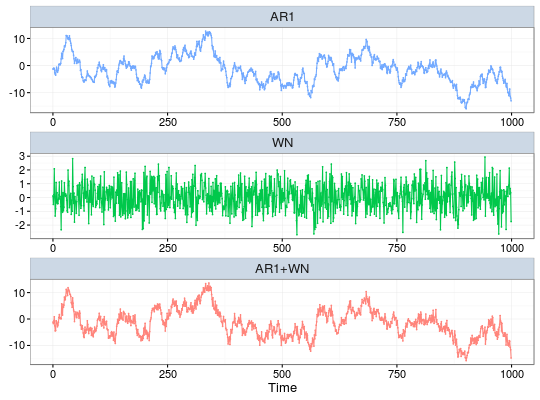
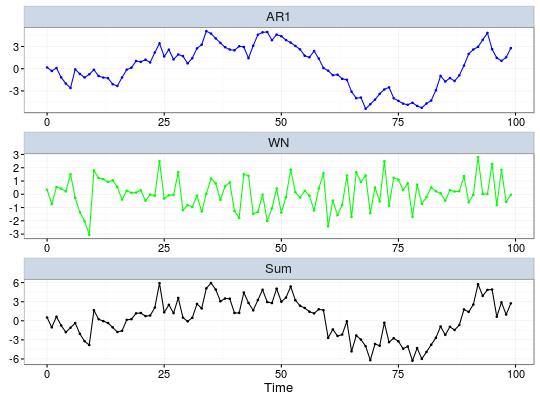

demo.lts(model, N = 1000, start = 0, end = NULL, freq = 1, unit = NULL, name = NULL, process = NULL, ...)
ts.model or gmwm object containing one of the allowed models.interger indicating the amount of observations generated in this function.numeric that provides the time of the first observation.numeric that provides the time of the last observation.numeric that provides the rate of samples. Default value is 1.string that contains the unit expression of the frequency. Default value is NULL.string that provides an identifier to the data. Default value is NULL.vector that contains model names of decomposed and combined processes.autoplot.ltsCreates a time series based on the supplied model, then generate a demo about its latent structure
This function accepts either a ts.model object (e.g. AR1(phi = .3, sigma2 =1) + WN(sigma2 = 1)) or a gmwm object.

# Modify the graph aesthetics demo.lts(model, N = 100, line.color = c('blue', 'green', 'black'), point.size = c(1,1,1), process = c('AR1', 'WN', 'Sum'))